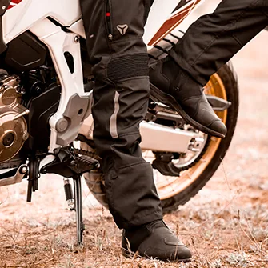
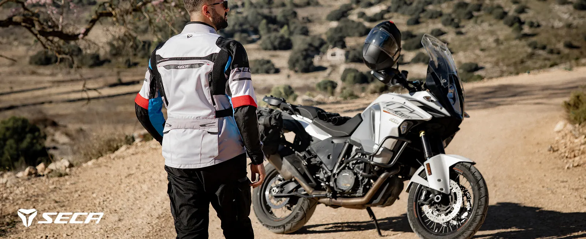
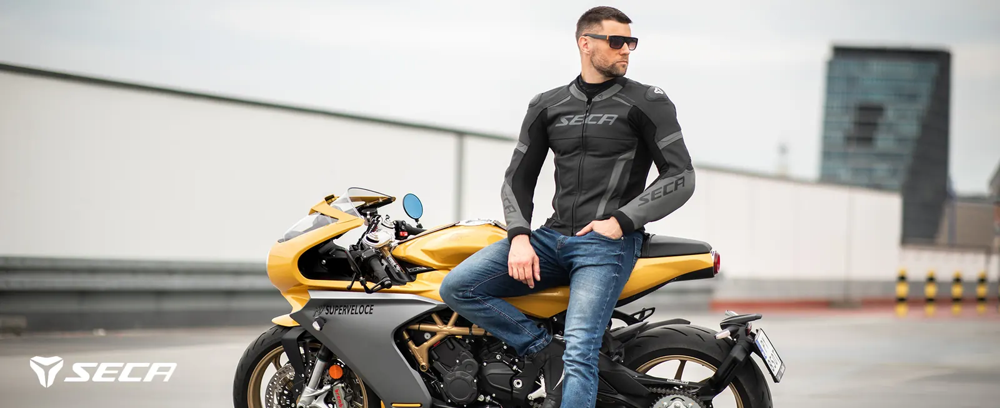
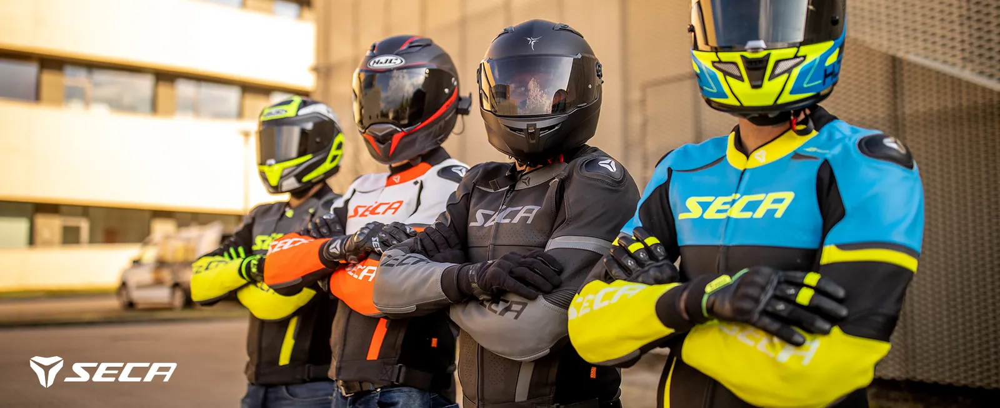
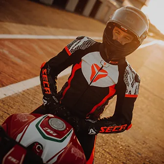

--:-- JEGES ÚT?BP XVII

RAIN · Eső
Esőre készen
Vízálló csizma, kesztyű és esőruha, hogy a túra ne a felhőkön múljon.
Mind a 13 termék
ROAD · Túra
Napi 500 km
Túrakabát, túranadrág, kesztyű és bakancs hosszú napokra, csomaggal is.
Mind a 27 termék
URBAN · Város
Városi körök
Kevlár farmer, rövid szárú cipő, városi kabát: munkába és kávézóba, motorral.
Mind a 60 termék
SPORT · Kanyar
Kanyarvadászat
Bőrkabát, sportkesztyű és sportcsizma, ha a hétvége a szerpentinről szól.
Mind a 39 termék
TRACK · Pálya
Pályanap
Egyrészes bőrruha, bőrnadrág, D3O protektorok: ami a rajtrácsra kell.
Mind a 22 termék
ODO115 termék a demóban
RAKTÁRON59 db-féle
ÁR4 600 Ft – 303 900 Ft
GLS2 900 Ft 1–3 munkanap

Kiegészítők és védelem
A Richa D3O protektorok puhák és hajlékonyak, ütésnél egy pillanat alatt megkeményednek. Seca kabátokba és nadrágokba is betehetők.
Szállítás és fizetés
- SZÁLLÍTÁS
- 2 900 FtGLS házhoz, 1–3 munkanap, kártyás fizetésnél. Utánvéttel 4 190 Ft.
- ÁTVÉTEL
- 0 FtBudapest XVII. kerület, előre egyeztetett időpontban.
- FIZETÉS
- BarionBankkártya, előre utalás vagy utánvét.
- MÉRET
- Mérettáblázat ›Bizonytalan vagy? Hívj: +36 70 220 1020